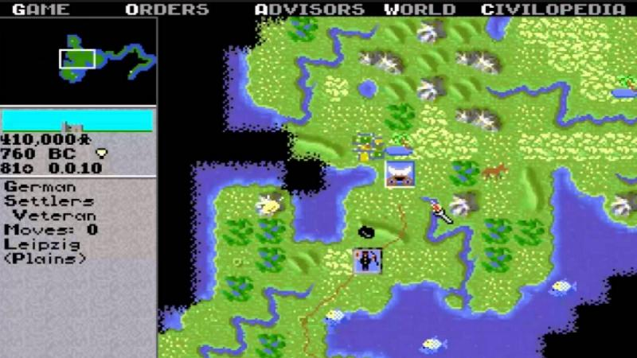
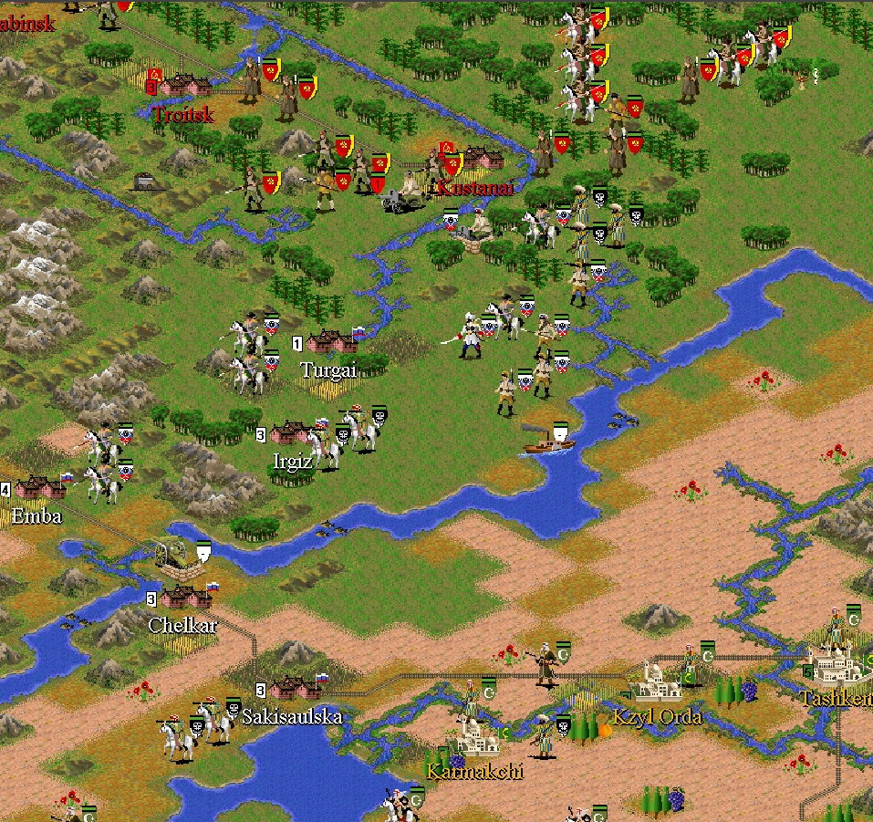
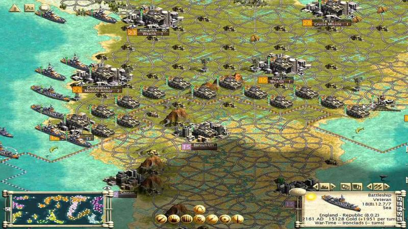
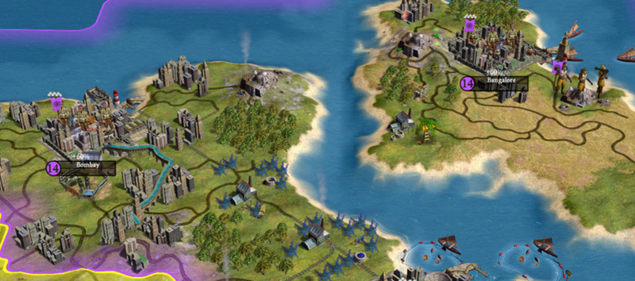
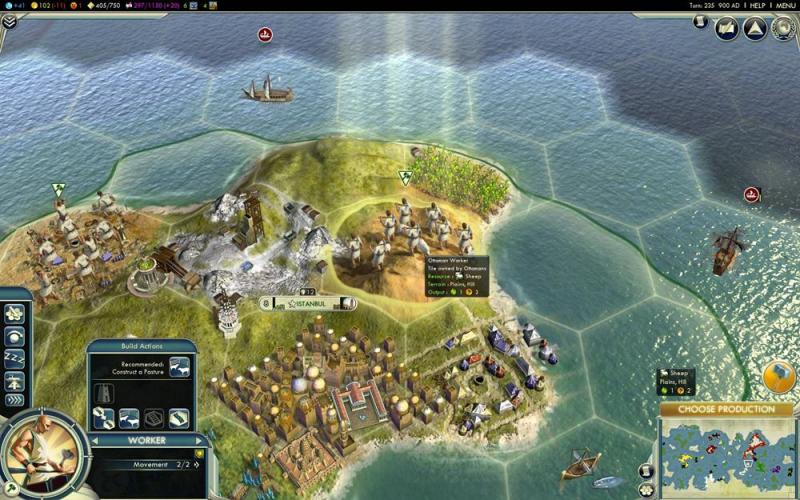
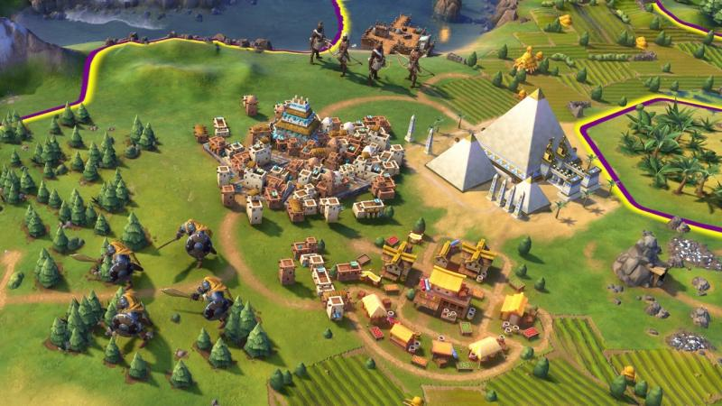

Civilization
Сегодня это кажется невероятным, но изначально издатели не хотели связываться с Civilization. В 1991 году компания MicroProse неплохо зарабатывала на различных симуляторах, и идея пошаговой стратегии казалась ей бесперспективной. Сиду Мейеру пришлось долго склонять издателей к эксперименту с Civilization, даже несмотря на то, что мир уже знал имя геймдизайнера по таким играм как Sid Meier’s Pirates или Sid Meier’s Railroad Tycoon.
Интересно, что изначально Мейер не планировал создавать целый жанр пошаговых стратегий. Civilization должна была стать еще одной RTS – стратегией в реальном времени. Тогда, в 1991, игровой рынок уже был знаком с этим жанром. Потому выпуск чего-то знакомого игрокам предполагал меньше рисков. Вероятно, за то, что первая «Цивилизация» стала пошаговой, стоит благодарить еще одного именитого геймдизайнера, Брюса Шелли. Прежде чем присоединиться к Мейеру, Шелли участвовал в создании нескольких настольных игр. В том числе – игры, очень похожей концепцией на «Цивилизацию». Очевидно, что его видение сильно повлияло на всю серию игр.
Когда Civilization I наконец-то вышла, она совершила небольшую революцию в игровой индустрии, привнеся в нее сразу несколько новшеств. Во-первых, новым стал сам жанр TBS (англ. Turn-based strategy, пошаговая стратегия). Также Civilization стала первой игрой, в которой появилось понятие «технологического древа» и внутренняя энциклопедия, включающая подробные описания всех понятий и механик игры.
Как уже говорилось, издатель MicroProse воспринимал игру без энтузиазма, потому на рынок «Цивилизация» вышла без маркетинговой поддержки. Тем не менее, игра так понравилась пользователям, что о ней стали говорить без помощи какой-либо рекламы. Начало было положено.
Civilization 2
Вторая часть игры вышла спустя пять лет, в 1991 году. Пять лет – очень немалый срок для мира технологий. Потому в техническом плане новая игра стала намного совершеннее предыдущей. Первое, что бросается в глаза – перспектива. Если в Civilization I игрок смотрел на карту исключительно сверху, то во второй части было решено перейти к более модному изометрическому виду. Само собой, клетки стали более красивыми, звуки – более богатыми.
В плане геймпеля игра также улучшилась. Боевые юниты получили показатели жизней и силы, искусственный интеллект противника стал более коварным, появилась возможность автоматизировать действия некоторых своих юнитов. В общем, игра понемногу приобретала более современный вид. Отдельно стоит упомянуть потрясающие кинематографические вставки, которые демонстрировались игроку при постройке того или иного чуда света. Сейчас этим никого не удивить, но в 1996 году подобная «фишка» казалась чем-то совершенно невероятным.
Civilization 3
Прошло еще пять лет. После ряда судебных процессов и перекупок компании, права на имя и франшизу Civilization оказались в руках французского издателя Infogrames. Стоит упомянуть, что в этот промежуток Сид Мейер успел выпустить еще одну хитовую игру – Sid Meier’s Alpha Centauri, которая представляет собой научно-фантастическую вариацию «Цивилизации». По сюжету, человечество вышло в космос и пытается колонизировать одну из планет Альфы Центавра. Бешеный успех этой космической стратегии сильно подогрел интерес публики к жанру TBS в целом и проектам Сида Мейера в частности. С одобрения Infogrames студия Мейера Firaxis выпустила третью часть «Цивилизации».
Civilization III стала первой игрой в серии, где изначальный выбор игроком той или иной цивилизации перестал быть сугубо «косметическим». Теперь у каждой нации появились свои уникальные способности, здания и юниты.
Геймплей изменился радикальным образом. У государств впервые появились четкие границы. Было введено понятие «культурного влияния» на цивилизации соперников. Появилась возможность начать в своей цивилизации Золотой век, дающий бонус к производству и финансам. Одним из самых важных новшеств стали ресурсы, случайным образом разбросанные по карте мира.
Civilization 4
В 2005 году «Цивилизация» впервые перешла от изометрии к полноценному трехмерному изображению. Главным геймплейным новшеством «четверки» стало введение религий. Хотя целое новое направление развития заметно разнообразило игровой процесс, не обошлось и без забавных инцидентов. Так, из-за религий цивилизации стали гораздо более агрессивными по отношению к соседям. Из-за этого игрок частенько оказывался в дипломатической или торговой изоляции. В последующих частях такое поведение компьютера немного исправили.
Была создана целая система «великих людей», способных создавать улучшения или обеспечивать цивилизацию различными бонусами. Последующие адд-оны к игре еще сильнее усовершенствовали эту систему.
Civilization 5
Пятая часть «Цивилизации» привнесла в игру массу изменений. Первое, что бросается в глаза – отход от традиционной «клеточной» карты в пользу карты из шестиугольников.
Civilization V – первая игра в серии, где игрок не может размещать несколько военных юнитов на одной клетке. Это означает, что, к примеру, один город может быть одновременно окружен только шестью юнитами ближнего боя. Отныне тактические маневры – наше всё.
Поскольку гигантских армий в игре больше нет, сами юниты стали намного сильнее и выносливее предшественников. При этом очень сильно повысилась зависимость армии от драгоценных ресурсов. Хотите построить один броненосец – вам потребуется одна единица угля. Учитывая это, в сценариях со скудными ресурсами карта мира превращается в увлекательную борьбу за бесценные клетки.
Интересно, что базовая версия Civilization V показалась фанатам очень урезанной и упрощенной. К примеру, из игры был полностью удалена религия. Впоследствии разработчики выпустили пару больших дополнений – Gods and Kings и Brave New World. Первое вернуло в игру шпионаж и религии. Второе – заметно усовершенствовало торговлю, дипломатию и культуру. Как следствие, игра со всеми дополнениями выглядит намного совершеннее своей «голой» версии.
Civilization 6
Civilization VI вышла совсем недавно, 21 октября. Пока она не выглядит лишком большим прорывом в сравнении с «пятеркой». Мы имеем всю ту же карту, в основе которой лежат шестигранники, и всю ту же систему боя, нацеленную, прежде всего, на тактический маневр.
Зато планирование городов и колоний перешло на принципиально новый уровень. Во-первых, здания в городах теперь строятся не как попало, а исключительно в отведенных для этого районах. Хотите построить банк? Предварительно для этого нужно отстроить финансовый район. Районы, в свою очередь, занимают клетки рядом с городом. При этом разным районам нужна разная местность, портовый район можно построить только на побережье, а священное место (район города с религиозными постройками) будет давать бонус, если построить его рядом с горами.
Чудеса света теперь также занимают место на карте. Хотите построить Колосс Родосский или Фаросский маяк? Вам потребуется портовый район и свободная клетка на побережье рядом с ним. Великие пирамиды можно построить только на свободной клетке с типом местности "пустыня". Наконец, постройки внутри районов возводятся исключительно по очереди. Независимо от того, как далеко вы продвинулись по древу технологий, для создания большого порта вам сначала понадобится обустроить маленькую гавань.
Все эти нюансы выводят планирование городов в Civilization VI практически на уровень градостроительного симулятора.
Искусственный интеллект в игре также заметно изменился. Понятия «дружбы» или «союза» для коварной машины больше ничего не значат. Если соседняя цивилизация, заметит, что у вас нет сильной армии, а в государстве настали трудные времена, то она непременно объявит вам войну и попытается что-нибудь у вас аннексировать. Даже если за ход до этого лидер этой цивилизации сам декларировал «дружбу народов». Это разительно отличается от пятой «Цивилизации». В предыдущей части игры, если вам везло с соседями, вы могли забросить все дела и бросить все ресурсы на развитие науки или культуры. Теперь же вам просто придется поддерживать свою армию в тонусе – иначе будете кормить чужую.